Du débutant complet au niveau A2 — vocabulaire, grammaire, prononciation et exercices.
frenchwithalban.com
15 chapitres · 2 niveaux · corrigés inclus
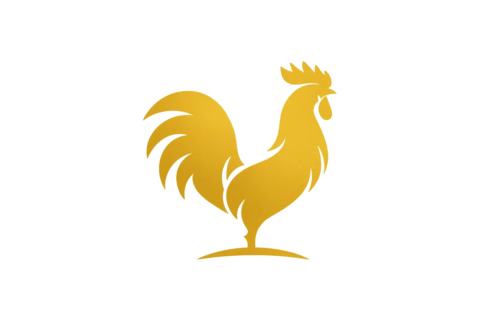
Avant-propos
Ce manuel rassemble, sous forme imprimable, l'ensemble des ressources publiées gratuitement sur
frenchwithalban.com. Il suit exactement la progression du site : d'abord les bases indispensables
du débutant complet, puis la grammaire du faux débutant.
Comment lire ce livre
Chaque mot et chaque phrase sont donnés avec leur prononciation en alphabet phonétique international,
écrite /ɑ̃tʁə dø baʁ/ entre deux barres obliques. Les traductions anglaises apparaissent
en gris clair : cachez-les avec la main pour vous tester.
Signe
Signification
/bɔ̃.ʒuʁ/
Prononciation. Le point sépare les syllabes, le signe ‿ indique une liaison.
bleu / bleue
Les lettres en or sont celles qui s'ajoutent au féminin.
Encadré bleu
Un point de règle à retenir.
Encadré rouge
Une erreur fréquente à éviter.
Encadré or
Une astuce de mémorisation.
Les deux niveaux
La Partie I ne demande aucune connaissance préalable : on y apprend à saluer, à compter, à dire
l'heure et le temps qu'il fait, et à se débrouiller en voyage. La Partie II aborde la mécanique de
la langue : la conjugaison au présent, à l'imparfait et au passé composé, l'accord et la place des adjectifs,
et les mots pour poser des questions.
Les exercices se trouvent à la fin de chaque chapitre ; tous les corrigés sont regroupés en fin
d'ouvrage. Les versions interactives et auto-corrigées de ces exercices restent disponibles gratuitement
sur le site.
Un conseil pour travailler seul
Lisez toujours à voix haute. Le français s'écrit beaucoup plus qu'il ne se prononce : les terminaisons
-e, -es et -ent des verbes sont muettes, et c'est en les entendant qu'on finit
par les oublier à l'oral — ce qui est exactement le but.
Table des matières
Partie I — Débutant complet
1Salutations et politesse14 formules · tutoiement et vouvoiement
2Les nombresde 0 à un milliard
3Les couleurs12 couleurs · le féminin
4Les jours et l'heurel'article · l'heure officielle et courante
5Les saisons et les mois4 saisons · 12 mois
6La météoil fait · il pleut · il y a
7Les animaux79 animaux · les petits · les pièges
8Phrases essentielles12 phrases de survie
9Phrases utiles pour touristes6 situations · questions et réponses
Partie II — Faux débutant (A1–A2)
10Les verbes en -ER au présent22 verbes · les cas particuliers
11Les verbes irréguliers au présent24 verbes essentiels
12Imparfait et passé composé28 verbes · auxiliaires et participes
13Les adjectifs essentiels50 adjectifs · accord et place
14Les mots interrogatifsque · qu'est-ce que · quoi · quel
15Qui ou que ?le pronom relatif · 20 phrases
Annexes
—Corrigés des exercicestous les chapitres
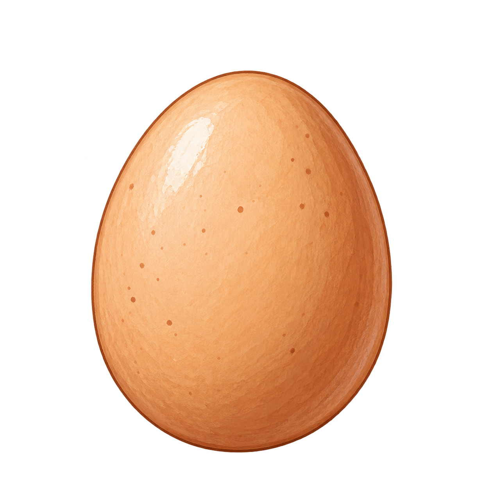
Partie I
Débutant complet
Aucun prérequis
Vous n'avez jamais appris le français, ou vous repartez de zéro. Ces neuf chapitres couvrent
ce qu'il faut pour saluer quelqu'un, compter, donner un rendez-vous, parler du temps qu'il fait
et voyager en France sans être bloqué.
Chapitre 1
Salutations et politesse
Les quatorze formules qui ouvrent et ferment toutes les conversations.
Le vocabulaire
Français
Prononciation
Anglais
Bonjour
/bɔ̃.ʒuʁ/
Hello / Good morning
Bonsoir
/bɔ̃.swaʁ/
Good evening
Salut
/sa.ly/
Hi / Bye (informal)
Au revoir
/o ʁə.vwaʁ/
Goodbye
À bientôt
/a bjɛ̃.to/
See you soon
S'il vous plaît
/sil vu plɛ/
Please (formal)
Merci beaucoup
/mɛʁ.si bo.ku/
Thank you very much
De rien
/də ʁjɛ̃/
You're welcome
Excusez-moi
/ɛk.sky.ze mwa/
Excuse me (formal)
Pardon
/paʁ.dɔ̃/
Sorry / Excuse me
Comment allez-vous ?
/kɔ.mɑ̃ t‿a.le vu/
How are you? (formal)
Ça va ?
/sa va/
How's it going? (informal)
Enchanté
/ɑ̃.ʃɑ̃.te/
Nice to meet you
Bonne journée
/bɔn ʒuʁ.ne/
Have a good day
Trois choses à savoir
Bonjour ne se dit qu'une fois
On dit bonjour à la première rencontre de la journée, puis on ne le répète plus à la
même personne. Le soir, à partir du crépuscule, bonjour devient bonsoir.
Notez qu'il n'existe pas d'équivalent courant de good afternoon : on dit bonjour
toute la journée.
Salut se dit à l'arrivée et au départSalut/sa.ly/ sert à la fois pour hi et pour bye,
mais uniquement entre proches : amis, famille, collègues du même âge. Dans un magasin, à l'hôtel ou avec
une personne plus âgée, dites bonjour.
Bonne journée : la formule pour partirBonne journée se dit en quittant quelqu'un, jamais en arrivant. Sur le même
modèle : bonne soirée le soir, bon week-end le vendredi,
bonne nuit seulement avant d'aller dormir.
Tutoyer ou vouvoyer
Le français distingue deux façons de dire you. Ce choix est la principale difficulté de la
politesse française, et il se joue dès la première phrase.
Vouvoiement — avec vous
Tutoiement — avec tu
Inconnus, commerçants, personnes plus âgées, contexte professionnel.
Famille, amis, enfants, collègues proches.
Bonjour, comment allez-vous ?
Salut, ça va ?
Excusez-moi, vous avez l'heure ?
Pardon, tu as l'heure ?
S'il vous plaît
S'il te plaît
En cas de doute, vouvoyez
Vouvoyer quelqu'un qu'on aurait pu tutoyer est au pire un peu distant. Tutoyer quelqu'un qui attendait
vous est ressenti comme impoli. C'est en général la personne la plus âgée, ou celle qui
reçoit, qui propose : « On peut se tutoyer ? »
Enchaîner une rencontre
— Bonjour ! Comment allez-vous ?Hello! How are you?
— Très bien, merci. Et vous ?Very well, thank you. And you?
— Ça va, merci. Je m'appelle Alban.I'm fine, thanks. My name is Alban.
— Enchanté !Nice to meet you!
— Au revoir, bonne journée !Goodbye, have a good day!
Exercice 1.1 — Complétez
Écrivez la formule française qui convient.
Vous entrez dans une boulangerie à 9 h. Vous dites :
Vous entrez dans un restaurant à 20 h. Vous dites :
On vous dit « merci ». Vous répondez :
Vous rencontrez quelqu'un pour la première fois. Vous dites :
Vous quittez un collègue le matin. Vous dites :
Vous marchez sur le pied de quelqu'un. Vous dites :
Exercice 1.2 — Tu ou vous ?
Pour chaque situation, indiquez la forme correcte.
Vous parlez à la boulangère.
Vous parlez à votre petit frère.
Vous parlez au directeur de l'école.
Vous parlez à un enfant de six ans.
Vous parlez à un touriste de votre âge dans une auberge de jeunesse.
Chapitre 2
Les nombres
De zéro à un milliard, avec la logique — parfois surprenante — des dizaines.
De 1 à 19
1un / une /œ̃/ · /yn/
2deux /dø/
3trois /tʁwa/
4quatre /katʁ/
5cinq /sɛ̃k/
6six /sis/
7sept /sɛt/
8huit /ɥit/
9neuf /nœf/
10dix /dis/
11onze /ɔ̃z/
12douze /duz/
13treize /tʁɛz/
14quatorze /katɔʁz/
15quinze /kɛ̃z/
16seize /sɛz/
17dix-sept /dis.sɛt/
18dix-huit /diz.ɥit/
19dix-neuf /diz.nœf/
La rupture se situe à 17
De 11 à 16, le français a des mots à part — onze, douze, treize, quatorze, quinze, seize —
qu'il faut mémoriser. À partir de 17, la construction redevient logique : dix-sept,
dix-huit, dix-neuf, c'est-à-dire 10 + 7, 10 + 8, 10 + 9.
Les dizaines
Chiffre
En lettres
Prononciation
20
vingt
/vɛ̃/
30
trente
/tʁɑ̃t/
40
quarante
/kaʁɑ̃t/
50
cinquante
/sɛ̃kɑ̃t/
60
soixante
/swasɑ̃t/
70
soixante-dix
/swasɑ̃t.dis/
80
quatre-vingts
/katʁ.vɛ̃/
90
quatre-vingt-dix
/katʁ.vɛ̃.dis/
70, 80, 90 : le calcul mental du français
Le français n'a pas de mot pour 70, 80 ni 90. Il compte :
70 = 60 + 10 (soixante-dix), 80 = 4 × 20 (quatre-vingts),
90 = 4 × 20 + 10 (quatre-vingt-dix). C'est un reste de numération par vingtaines.
Conséquence : la série des 70 continue avec onze, douze, treize… jusqu'à
soixante-dix-neuf, et celle des 90 de même jusqu'à quatre-vingt-dix-neuf.
De 20 à 29
20vingt
21vingt-et-un
22vingt-deux
23vingt-trois
24vingt-quatre
25vingt-cinq
26vingt-six
27vingt-sept
28vingt-huit
29vingt-neuf
De 60 à 79 — la série qui surprend
60soixante
70soixante-dix
61soixante-et-un
71soixante-et-onze
62soixante-deux
72soixante-douze
63soixante-trois
73soixante-treize
64soixante-quatre
74soixante-quatorze
65soixante-cinq
75soixante-quinze
66soixante-six
76soixante-seize
67soixante-sept
77soixante-dix-sept
68soixante-huit
78soixante-dix-huit
69soixante-neuf
79soixante-dix-neuf
De 80 à 99
80quatre-vingts
90quatre-vingt-dix
81quatre-vingt-un
91quatre-vingt-onze
82quatre-vingt-deux
92quatre-vingt-douze
83quatre-vingt-trois
93quatre-vingt-treize
84quatre-vingt-quatre
94quatre-vingt-quatorze
85quatre-vingt-cinq
95quatre-vingt-quinze
86quatre-vingt-six
96quatre-vingt-seize
87quatre-vingt-sept
97quatre-vingt-dix-sept
88quatre-vingt-huit
98quatre-vingt-dix-huit
89quatre-vingt-neuf
99quatre-vingt-dix-neuf
En Belgique et en Suisse, c'est plus simple70 = septante · 80 = huitante (Suisse) ou quatre-vingts (Belgique)
· 90 = nonante. Ces formes sont parfaitement correctes ; elles ne sont simplement pas
utilisées en France.
Les grands nombres
Chiffre
En lettres
Prononciation
100
cent
/sɑ̃/
200
deux cents
/dø.sɑ̃/
1 000
mille
/mil/
10 000
dix mille
/di.mil/
1 000 000
un million
/œ̃.mil.jɔ̃/
1 000 000 000
un milliard
/œ̃.mil.jaʁ/
Le -s de vingt et de centQuatre-vingts et deux cents prennent un -s quand ils terminent
le nombre. Ce -s disparaît dès qu'un chiffre les suit : quatre-vingt-un,
deux cent trois. Mille, lui, ne prend jamais de -s :
deux mille.
Exercice 2.1 — Écrivez en chiffres
quarante-huit
soixante-quinze
quatre-vingt-treize
soixante et onze
quatre-vingt-dix-sept
deux cent quatre-vingts
Exercice 2.2 — Écrivez en toutes lettres
16
21
62
78
84
99
Chapitre 3
Les couleurs
Douze couleurs de base — et le premier accord au féminin.
Les lettres qui s'ajoutent au féminin apparaissent en or.
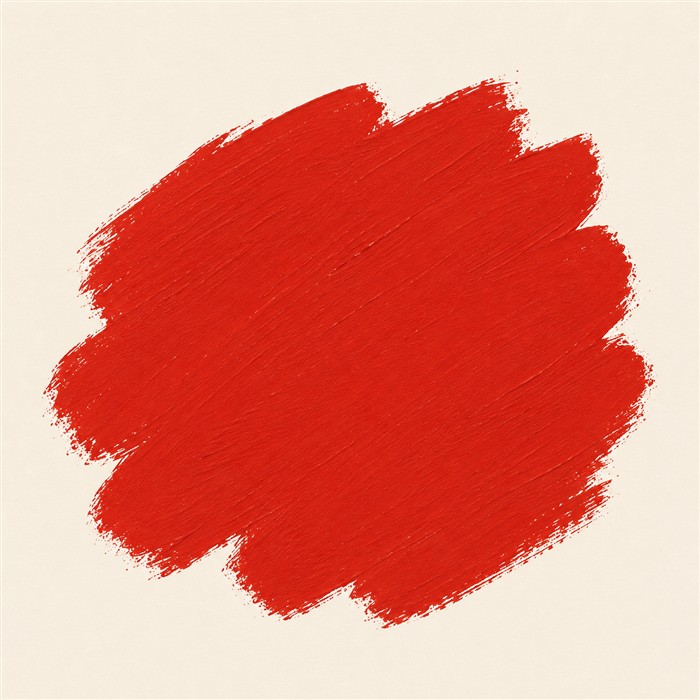
rouge/ʁuʒ/
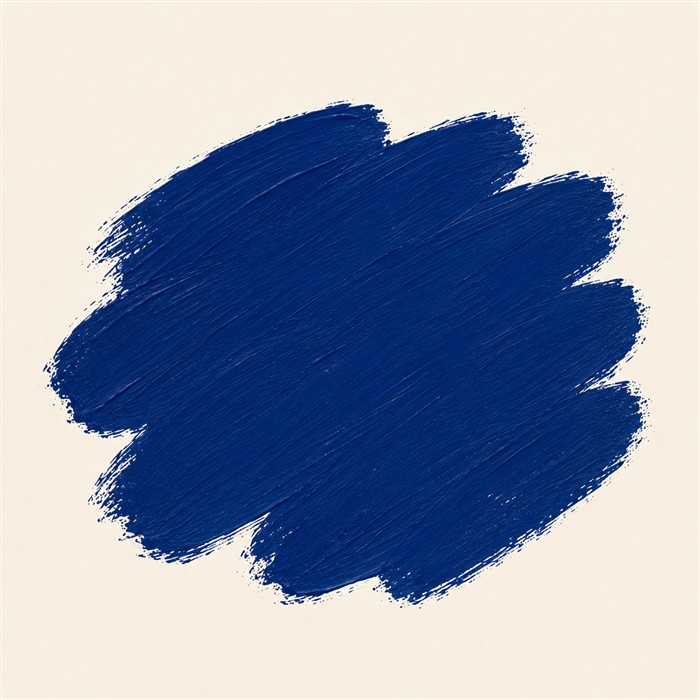
bleu / bleue/blø/
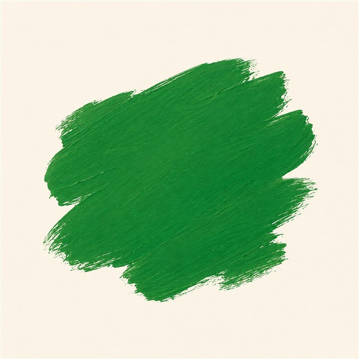
vert / verte/vɛʁ/ · /vɛʁt/
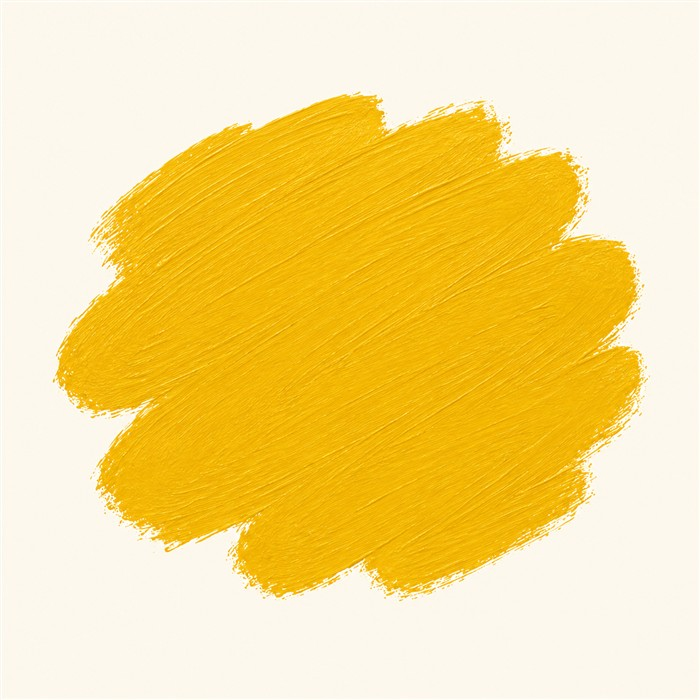
jaune/ʒon/
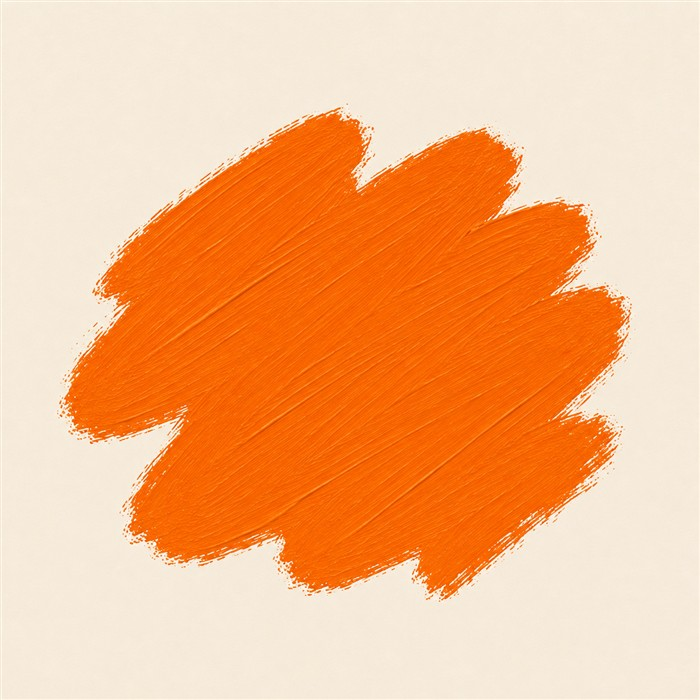
orange/ɔʁɑ̃ʒ/
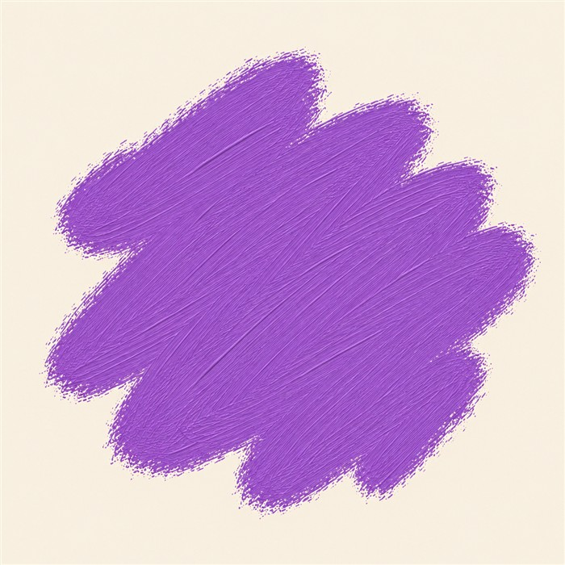
violet / violette/vjɔlɛ/ · /vjɔlɛt/
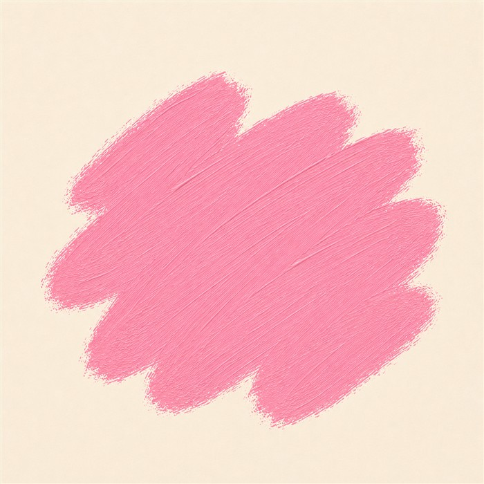
rose/ʁoz/
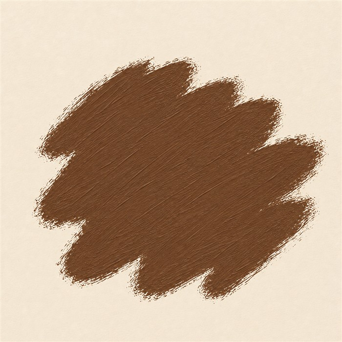
marron/maʁɔ̃/
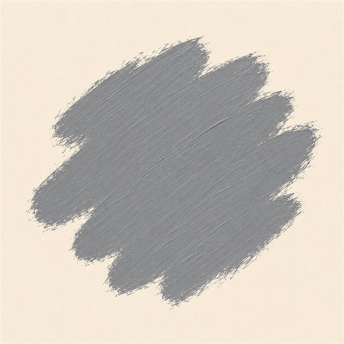
gris / grise/ɡʁi/ · /ɡʁiz/
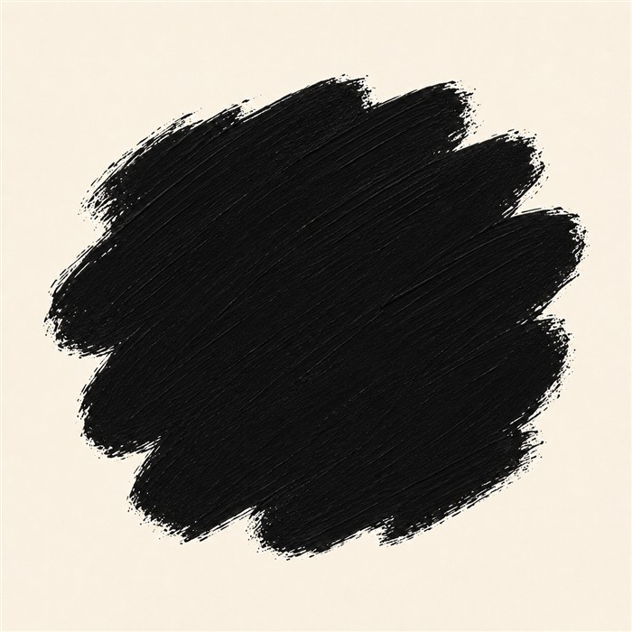
noir / noire/nwaʁ/
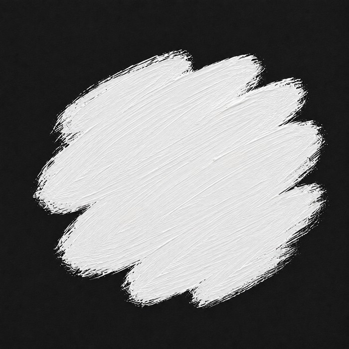
blanc / blanche/blɑ̃/ · /blɑ̃ʃ/
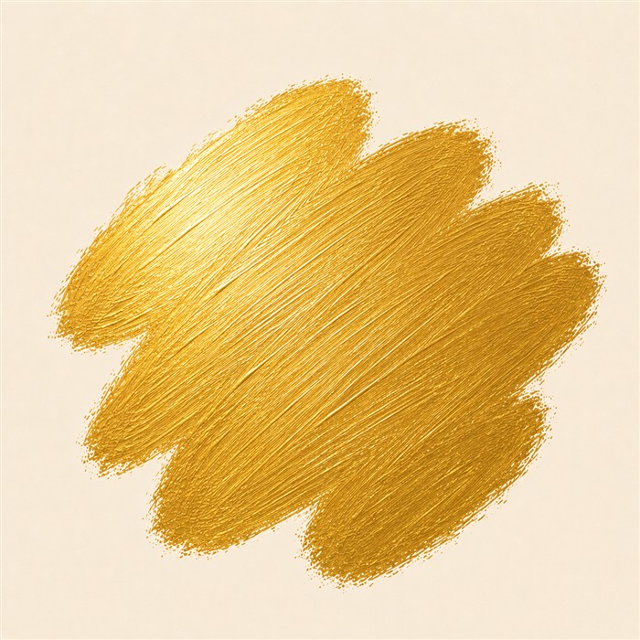
doré / dorée/dɔʁe/
Trois comportements différents
Type
Exemples
Règle
Déjà terminé par -e
rouge, jaune, rose
Aucun changement au féminin.
Terminé par une consonne ou une voyelle
vert → verte bleu → bleue
On ajoute -e. La consonne, jusque-là muette, se prononce alors.
Formes irrégulières
blanc → blanche violet → violette
À mémoriser individuellement.
La consonne finale se réveille au fémininvert se prononce /vɛʁ/ — le t est muet. Mais
verte se prononce /vɛʁt/ : le -e ajouté fait sonner le
t. Même chose pour gris/ɡʁi/ →
grise/ɡʁiz/. C'est la logique de tout l'accord français.
Marron et orange ne changent jamais
Les couleurs qui sont aussi des noms de choses — marron (le fruit),
orange (le fruit) — restent invariables : des chaussures marron,
des murs orange, sans -s ni -e.
La couleur se place après le nom
une voiture rougea red car
un pull verta green jumper
une maison blanchea white house
des chaussures noiresblack shoes
Exercice 3.1 — Mettez au féminin
un manteau vert → une veste
un mur blanc → une porte
un stylo bleu → une lampe
un chat gris → une souris
un rideau violet → une robe
un vélo rouge → une voiture
Chapitre 4
Les jours et l'heure
Fixer un rendez-vous : le jour, l'article qui change tout, et les deux façons de dire l'heure.
Les jours de la semaine
En français, la semaine commence le lundi. Les jours s'écrivent toujours en
minuscules, même au milieu d'une phrase — contrairement à l'anglais.
lundi/lœ̃di/ Monday
mardi/maʁdi/ Tuesday
mercredi/mɛʁkʁədi/ Wednesday
jeudi/ʒødi/ Thursday
vendredi/vɑ̃dʁədi/ Friday
samedi/samdi/ Saturday
dimanche/dimɑ̃ʃ/ Sunday
le week-end/wikɛnd/ the weekend
Avec ou sans article
C'est la difficulté principale du chapitre : l'article change complètement le sens.
Sans article — une seule fois
Avec « le » — chaque semaine
Je travaille lundi. Ce lundi précis.
Je travaille le lundi. Tous les lundis.
Samedi, je vais à Paris.
Le samedi, je fais du sport.
Pas de préposition
On ne dit pas « sur lundi » ni « à lundi » pour situer une action. On dit simplement
lundi ou le lundi. Attention : « à lundi ! » existe,
mais c'est une formule pour se dire au revoir — see you Monday.
Situer dans le temps
Passé
Présent
Futur
avant-hier
aujourd'hui
demain
hier
ce matin
après-demain
la semaine dernière
cette semaine
la semaine prochaine
Quelle heure est-il ?
Deux façons de dire l'heure coexistent : la forme officielle, de 0 à 24 heures, et la
forme courante, de 1 à 12 heures.
Heure
Forme courante
Forme officielle et remarque
3 h 00
trois heures
15h00 · trois heures de l'après-midi
3 h 15
trois heures et quart
15h15 · trois heures quinze
3 h 30
trois heures et demie
15h30 · trois heures trente
3 h 45
quatre heures moins le quart
15h45 · trois heures quarante-cinq
7 h 10
sept heures dix
7h10 · sept heures du matin
8 h 50
neuf heures moins dix
8h50 · huit heures cinquante
12 h 00
midi
12h00 · jamais « douze heures »
0 h 30
minuit et demi
00h30 · sans « e » après minuit
Officiel ou courant ?
La forme officielle sert pour les horaires : trains, rendez-vous, télévision. La forme
courante s'emploie dans la conversation, avec du matin, de l'après-midi
ou du soir pour lever l'ambiguïté.
Les cas particuliers
On dit
Explication
midi
12 h 00 — jamais « douze heures » dans la conversation.
minuit
00 h 00 — jamais « zéro heure » dans la conversation.
et demie
Après une heure : trois heures et demie. Mais après midi et minuit, on écrit et demi sans « e » : midi et demi.
et quart
trois heures et quart — sans article devant « quart ».
moins le quart
quatre heures moins le quart — avec l'article, contrairement à « et quart ».
Pourquoi « et demi » perd son -eHeure est un mot féminin : trois heures et demie. Mais midi et
minuit sont masculins : midi et demi, minuit et demi.
L'accord suit le mot qui précède.
Poser la question
Quelle heure est-il ?— Il est trois heures.
Vous avez l'heure ?— Oui, il est huit heures et quart.
À quelle heure commence le cours ?— À dix heures.
« Il est » et « à »
Pour dire l'heure qu'il est : il est trois heures. Pour situer un événement :
à trois heures. Ne mélangez pas les deux.
Exercice 4.1 — Une fois ou chaque semaine ?
Indiquez si la phrase parle d'une seule fois ou de chaque semaine.
Le mardi, j'ai un cours de français.
Mardi, j'ai un rendez-vous chez le médecin.
Je vais au marché le dimanche.
Dimanche, nous allons chez ma sœur.
Exercice 4.2 — Dites l'heure (forme courante)
10 h 15
6 h 30
13 h 45
12 h 00
00 h 30
21 h 50
Chapitre 5
Les saisons et les mois
Quatre saisons, douze mois — et une préposition qui change pour une seule d'entre elles.
Les quatre saisons
le printemps/lə pʁɛ̃tɑ̃/l'été/lete/l'automne/lotɔn/l'hiver/livɛʁ/
Au printemps, mais en été
Trois saisons sur quatre prennent en : en été, en automne, en hiver. Le printemps
fait exception et prend au : au printemps. La raison est phonétique — les trois
autres commencent par une voyelle.
Les mois de l'année
Comme les jours, les mois s'écrivent toujours en minuscules.
janvier/ʒɑ̃vje/
février/fevʁije/
mars/maʁs/
avril/avʁil/
mai/mɛ/
juin/ʒɥɛ̃/
juillet/ʒɥijɛ/
août/ut/
septembre/sɛptɑ̃bʁ/
octobre/ɔktɔbʁ/
novembre/nɔvɑ̃bʁ/
décembre/desɑ̃bʁ/
Deux pièges de prononciationaoût se prononce /ut/ : le a ne s'entend pas.
juin/ʒɥɛ̃/ et juillet/ʒɥijɛ/
commencent tous deux par le son /ʒɥ/, qu'il faut travailler séparément.
Dire une date
Nous sommes le 3 mars.It's the 3rd of March.
Mon anniversaire est en juillet.My birthday is in July.
Je pars le premier août.I leave on the first of August.
En hiver, il fait froid.In winter, it's cold.
Le premier, puis deux, trois…
Seul le premier jour du mois utilise l'ordinal : le premier mai. Ensuite on emploie les
nombres simples : le deux mai, le trois mai — et non « le deuxième mai ».
Exercice 5.1 — En ou au ?
Il fait chaud été.
Les fleurs poussent printemps.
Les feuilles tombent automne.
Il neige hiver.
Exercice 5.2 — Quelle saison ?
Écrivez la saison qui correspond au mois.
janvier
avril
juillet
octobre
Chapitre 6
La météo
Le sujet de conversation numéro un — et trois structures à ne pas confondre.
Le vocabulaire
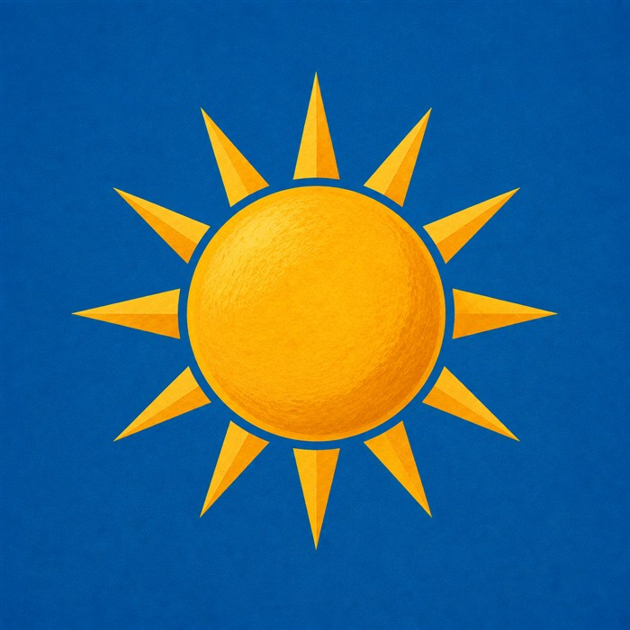
le soleil/sɔlɛj/le nuage/nɥaʒ/
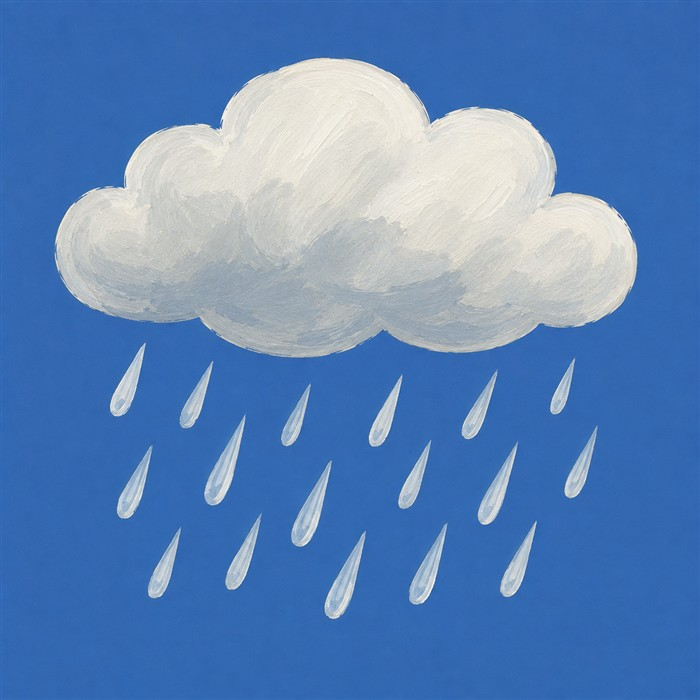
la pluie/plɥi/
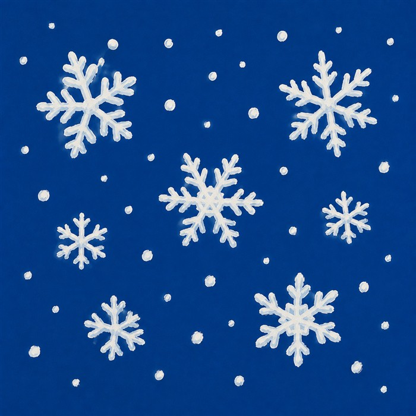
la neige/nɛʒ/le vent/vɑ̃/l'orage/ɔʁaʒ/le brouillard/bʁujaʁ/la tempête/tɑ̃pɛt/l'arc-en-ciel/aʁkɑ̃sjɛl/le ciel/sjɛl/
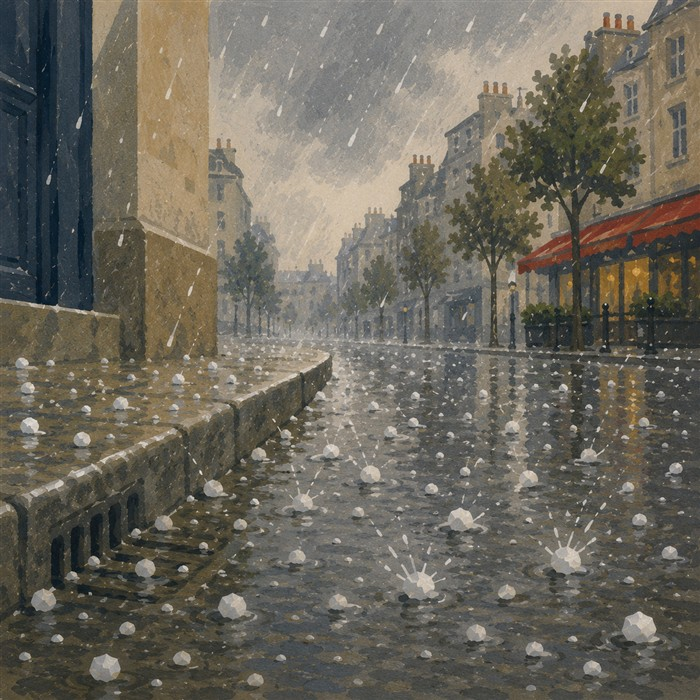
la grêle/ɡʁɛl/
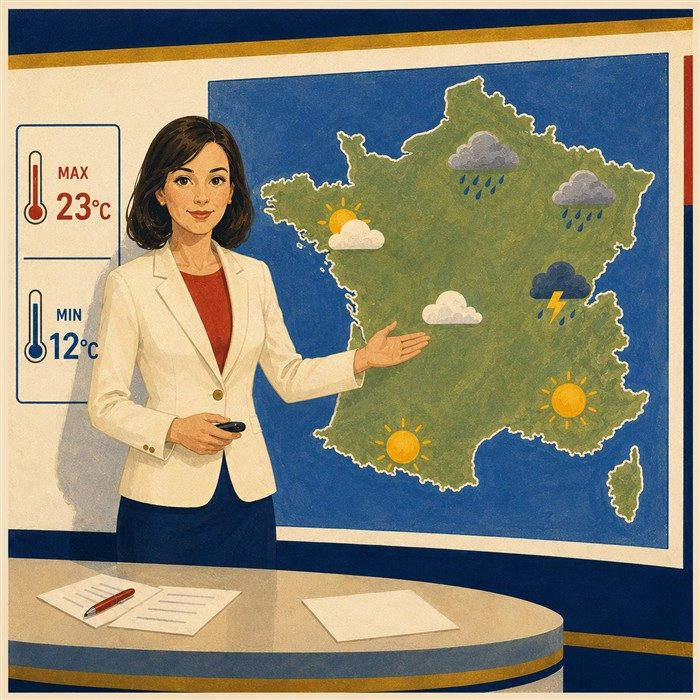
la météo/meteo/
Les autres mots utiles
l'éclair/eklɛʁ/ lightning
le gel/ʒɛl/ frost
le tonnerre/tɔnɛʁ/ thunder
la canicule/kanikyl/ heatwave
l'averse/avɛʁs/ shower
la prévision/pʁevizjɔ̃/ forecast
la température/tɑ̃peʁatyʁ/ temperature
le degré/dəɡʁe/ degree
Quel temps fait-il ?
C'est la question à connaître. Pour y répondre, le français utilise trois structures
différentes selon le mot employé.
Structure
Exemples
Quand l'utiliser
il fait + adjectif
il fait beau il fait froid
Pour la sensation générale et la température.
il + verbe
il pleut il neige il gèle
Quand un verbe existe. Ces verbes n'ont que la forme « il ».
il y a + nom
il y a du vent il y a du brouillard
Quand le phénomène n'a pas de verbe.
L'erreur la plus fréquente
On ne dit pas « il est pluie » ni « c'est froid » pour parler du temps. La météo utilise
toujours il impersonnel — un il qui ne désigne personne, comme le it de
it's raining.
Il fait…
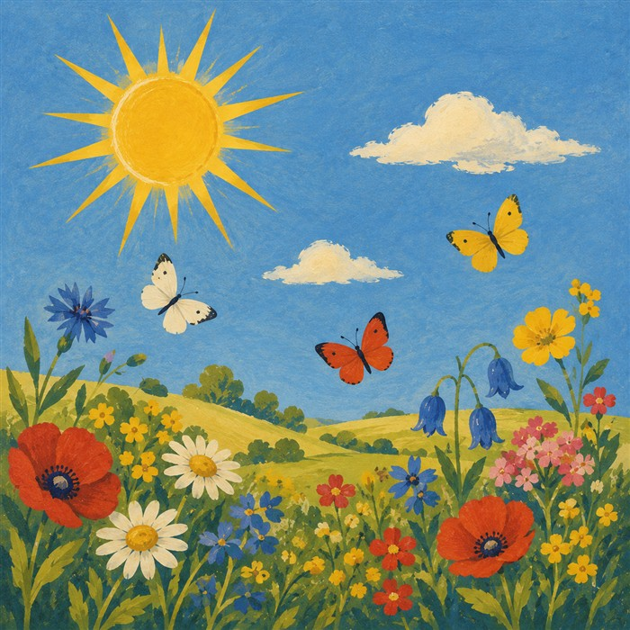
Il fait beau.le ciel est dégagé
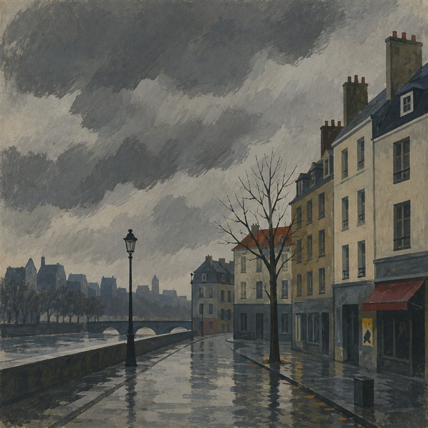
Il fait mauvais.le ciel est couvert
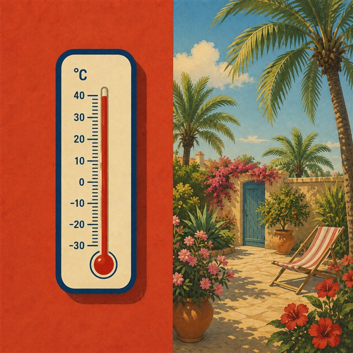
Il fait chaud.40 °C
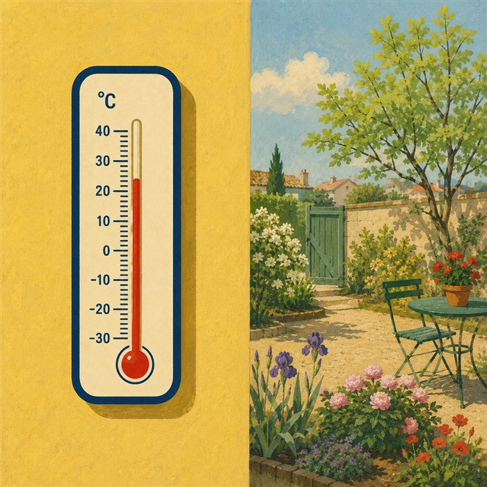
Il fait doux.23 °C
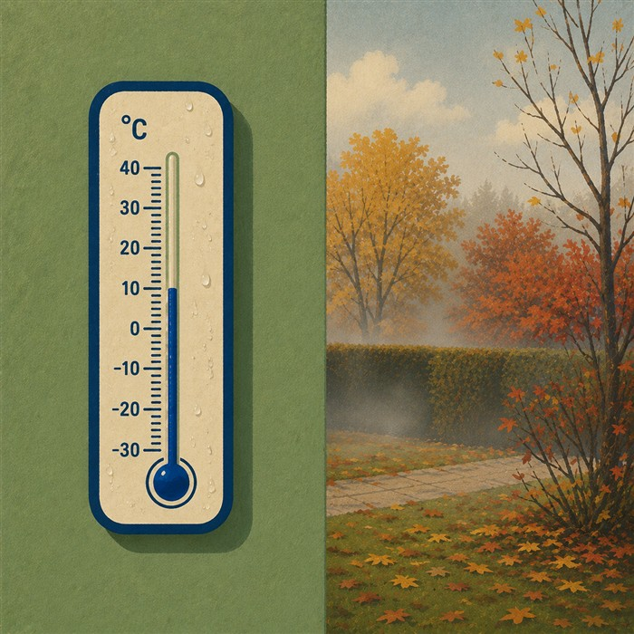
Il fait frais.10 °C
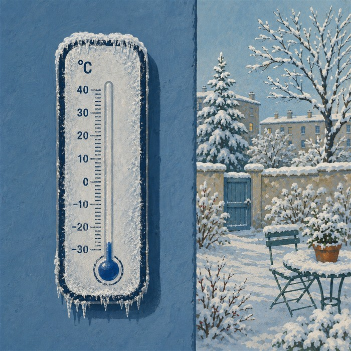
Il fait froid.−25 °C
Les adjectifs par paires
Positif
Négatif
il fait beau
il fait mauvais
il fait chaud
il fait froid
il fait doux
il fait frais
il fait sec
il fait humide
il fait clair
il fait gris, il fait lourd
La température
On demande
On répond
Quelle température fait-il ?
Il fait vingt degrés.
Il fait combien ?
Il fait vingt.
Et en hiver ?
Il fait moins cinq.
Dans la conversation
On dit simplement il fait vingt ou il fait moins cinq, sans répéter
« degrés ». Le mot n'apparaît que dans un bulletin météo ou une phrase soignée.
Quelques phrases
Quel temps fait-il ?— Il pleut.
Quel temps fait-il chez vous ?— Il fait beau, mais il y a du vent.
Il va faire beau demain ?— Oui, le ciel va se dégager.
Quelques expressions
Expression
Sens
Il pleut des cordes.
Il pleut très fort.
Il fait un temps de chien.
Le temps est très mauvais.
Il fait un froid de canard.
Il fait extrêmement froid.
Un soleil de plomb.
Un soleil écrasant, très chaud.
Exercice 6.1 — Il fait, il, ou il y a ?
Complétez avec la structure qui convient.
beau aujourd'hui.
pleut depuis ce matin.
du brouillard sur la route.
neige en montagne.
très froid en janvier.
des nuages, mais il ne pleut pas.
Exercice 6.2 — Trouvez le contraire
Il fait beau. →
Il fait chaud. →
Il fait doux. →
Il fait sec. →
Chapitre 7
Les animaux
Soixante-dix-neuf animaux classés par milieu — avec l'article, qui donne le genre.
Apprenez toujours l'article avec le motle chat, la vache : l'article vous dit le genre du nom, et le genre
commande ensuite tous les accords. Devant une voyelle, le et la deviennent
l' — ce qui masque le genre : l'oiseau est masculin, l'abeille est
féminin, et rien ne le montre.
Animaux domestiques et de la ferme
l'âne/ɑn/ the donkey
le canard/kanaʁ/ the duck
le chat/ʃa/ the cat
le cheval/ʃəval/ the horse
la chèvre/ʃɛvʁ/ the goat
le coq/kɔk/ the rooster
le chien/ʃjɛ̃/ the dog
le cochon/kɔʃɔ̃/ the pig
le hamster/amstɛʁ/ the hamster
le lapin/lapɛ̃/ the rabbit
le mouton/mutɔ̃/ the sheep
l'oie/wa/ the goose
l'oiseau/wazo/ the bird
le poisson/pwasɔ̃/ the fish
la poule/pul/ the hen
la tortue/tɔʁty/ the tortoise
la vache/vaʃ/ the cow
la souris/suʁi/ the mouse
le dindon/dɛ̃dɔ̃/ the turkey
le cygne/siɲ/ the swan
Animaux de la forêt
la biche/biʃ/ the doe
le cerf/sɛʁ/ the deer, the stag
la chouette/ʃwɛt/ the owl
l'écureuil/ekyʁœj/ the squirrel
le hérisson/eʁisɔ̃/ the hedgehog
le loup/lu/ the wolf
le renard/ʁənaʁ/ the fox
la taupe/top/ the mole
le hibou/ibu/ the horned owl
le sanglier/sɑ̃ɡlije/ the wild boar
Animaux sauvages
l'autruche/otʁyʃ/ the ostrich
le castor/kastɔʁ/ the beaver
le chameau/ʃamo/ the camel
la cigogne/siɡɔɲ/ the stork
le crocodile/kʁɔkɔdil/ the crocodile
le dromadaire/dʁɔmadɛʁ/ the dromedary
l'éléphant/elefɑ̃/ the elephant
la girafe/ʒiʁaf/ the giraffe
le gorille/ɡɔʁij/ the gorilla
le guépard/ɡepaʁ/ the cheetah
l'hippopotame/ipɔpɔtam/ the hippopotamus
le kangourou/kɑ̃ɡuʁu/ the kangaroo
le lion/ljɔ̃/ the lion
l'ours/uʁs/ the bear
la panthère/pɑ̃tɛʁ/ the panther
le perroquet/peʁɔkɛ/ the parrot
le serpent/sɛʁpɑ̃/ the snake
le singe/sɛ̃ʒ/ the monkey
le tigre/tiɡʁ/ the tiger
le zèbre/zɛbʁ/ the zebra
Insectes et petits animaux
l'abeille/abɛj/ the bee
l'araignée/aʁɛɲe/ the spider
la chenille/ʃənij/ the caterpillar
la coccinelle/kɔksinɛl/ the ladybird
le crapaud/kʁapo/ the toad
l'escargot/ɛskaʁɡo/ the snail
la fourmi/fuʁmi/ the ant
la grenouille/ɡʁənuj/ the frog
le lézard/lezaʁ/ the lizard
le mille-pattes/milpat/ the centipede
la mouche/muʃ/ the fly
le papillon/papijɔ̃/ the butterfly
la sauterelle/sotʁɛl/ the grasshopper
le scarabée/skaʁabe/ the beetle
le ver de terre/vɛʁdətɛʁ/ the earthworm
Animaux marins
la baleine/balɛn/ the whale
le bernard-l'ermite/bɛʁnaʁlɛʁmit/ the hermit crab
le crabe/kʁab/ the crab
le dauphin/dofɛ̃/ the dolphin
l'étoile de mer/etwaldəmɛʁ/ the starfish
l'hippocampe/ipɔkɑ̃p/ the seahorse
la méduse/medyz/ the jellyfish
la mouette/mwɛt/ the seagull
l'otarie/ɔtaʁi/ the sea lion
le pélican/pelikɑ̃/ the pelican
la pieuvre/pjœvʁ/ the octopus
le requin/ʁəkɛ̃/ the shark
le phoque/fɔk/ the seal
la tortue de mer/tɔʁtydəmɛʁ/ the sea turtle
Les petits
Le français a un mot distinct pour le petit de chaque animal — un vocabulaire que les enfants
apprennent très tôt.
le chatle chaton
le chienle chiot
le chevalle poulain
la poulele poussin
la vachele veau
le moutonl'agneau
le cochonle porcelet
la chèvrele chevreau
le lapinle lapereau
le canardle caneton
l'oiel'oison
le lionle lionceau
l'oursl'ourson
le louple louveteau
l'éléphantl'éléphanteau
Deux terminaisons reviennent sans cesse-eau / -eton (lionceau, ourson, caneton, chevreau) et -et
(porcelet). Ce ne sont pas des règles absolues, mais elles aident : la plupart des petits d'animaux
sont masculins, même quand le parent est féminin — la vache donne le veau.
Trois pièges de genre et de pluriel
Le hibou : un h aspiré
On dit le hibou, jamais « l'hibou ». Le h dit « aspiré » interdit l'élision et
la liaison. Même chose pour le hérisson et le hamster.
Une souris, malgré le -isSouris est un mot féminin, malgré sa terminaison en -is qui fait
penser à un masculin.
Les pluriels en -aux et en -oux
Les mots en -al font leur pluriel en -aux : un cheval, des chevaux ;
un animal, des animaux. Et sept mots en -ou prennent un -x :
bijou, caillou, chou, genou, hibou, joujou, pou.
Exercice 7.1 — Les pièges
Entourez la bonne réponse.
le hibou · l'hibou · la hibou
une souris · un souris · un sourie
Pluriel de « un cheval » : des chevaux · des chevals · des chevales
Pluriel de « un hibou » : des hiboux · des hibous · des hiboues
Quel animal a une seule bosse ? le dromadaire · le chameau · le lama
En quoi se transforme la chenille ? en papillon · en sauterelle · en scarabée
Quel insecte fait le miel ? l'abeille · la guêpe · la mouche
Quel animal marin a huit bras ? la pieuvre · le crabe · la méduse
La femelle du cerf : la biche · la chèvre · la truie
Dans les expressions, quel animal est « rusé » ? le renard · le loup · la taupe
Quel animal est « têtu » ? l'âne · le chat · l'oie
Quand il pleut très fort : Il pleut des cordes · Il pleut des chats · Il pleut des grenouilles
Exercice 7.2 — Le petit de l'animal
la vache →
le mouton →
la poule →
le cheval →
le chien →
le loup →
Chapitre 8
Phrases essentielles
Douze phrases de survie. Si vous n'en apprenez que douze, apprenez celles-ci.
Français
Prononciation
Anglais
Je ne parle pas bien français
/ʒə nə paʁl pa bjɛ̃ fʁɑ̃.sɛ/
I don't speak French well
Est-ce que vous parlez anglais ?
/ɛs kə vu paʁ.le ɑ̃.glɛ/
Do you speak English?
Je ne comprends pas
/ʒə nə kɔ̃.pʁɑ̃ pa/
I don't understand
Est-ce que vous pouvez répéter ?
/ɛs kə vu pu.ve ʁe.pe.te/
Can you repeat that?
Est-ce que vous pouvez parler plus lentement ?
/ɛs kə vu pu.ve paʁ.le ply lɑ̃t.mɑ̃/
Can you speak more slowly?
Combien ça coûte ?
/kɔ̃.bjɛ̃ sa kut/
How much does it cost?
Je cherche la station Palais Royal
/ʒə ʃɛʁʃ la sta.sjɔ̃ pa.lɛ ʁwa.jal/
I'm looking for Palais Royal station
Où sont les toilettes ?
/u sɔ̃ le twa.lɛt/
Where are the toilets?
Vous prenez la carte bancaire ?
/vu pʁə.ne la kaʁt bɑ̃.kɛʁ/
Do you take card payment?
J'ai une réservation au nom de…
/ʒe yn ʁe.zɛʁ.va.sjɔ̃ o nɔ̃ də/
I have a reservation under the name…
Je vais à l'aéroport
/ʒə vɛ a la.e.ʁɔ.pɔʁ/
I'm going to the airport
Une table pour trois personnes, s'il vous plaît
/yn tabl puʁ tʁwa pɛʁ.sɔn sil vu plɛ/
A table for three people, please
La négation encadre le verbeJe ne comprends pas :
en français, la négation se fait en deux morceaux, placés de part et d'autre du verbe. À l'oral rapide, le
ne disparaît souvent — on entend « je comprends pas » — mais à l'écrit il reste obligatoire.
Est-ce que : la question sans effort
Placez est-ce que/ɛs.kə/ devant n'importe quelle affirmation et
vous obtenez une question, sans rien changer d'autre : Vous parlez anglais →
Est-ce quevous parlez anglais ? C'est la construction la plus rentable du
français débutant. Voir le chapitre 14.
Exercice 8.1 — Que dites-vous ?
Vous n'avez pas compris ce qu'on vient de vous dire.
La personne parle trop vite.
Vous voulez connaître le prix.
Vous arrivez à l'hôtel.
Vous cherchez les toilettes dans un café.
Chapitre 9
Phrases utiles pour touristes
Les questions qu'un voyageur pose en France — et les réponses qu'il peut entendre.
Apprenez aussi les réponses
La plupart des méthodes n'enseignent que les questions. Mais poser « Où est la gare ? » ne sert à
rien si l'on ne reconnaît pas « C'est tout droit ». Chaque section ci-dessous donne les deux
côtés de l'échange.
Se présenter
Français
Anglais
Comment vous appelez-vous ?
What's your name?
Je m'appelle Sarah.
My name is Sarah.
D'où venez-vous ?
Where are you from?
Je viens des États-Unis.
I'm from the United States.
Je viens du Japon.
I'm from Japan.
Vous parlez français ?
Do you speak French?
Un peu. · Non, pas très bien. · Oui, un petit peu.
A little. · No, not very well. · Yes, a little bit.
Vous êtes en vacances ?
Are you on holiday?
Oui, je suis en vacances. · Oui, pour une semaine.
Yes, I'm on holiday. · Yes, for a week.
Demander son chemin
Français
Anglais
Excusez-moi, où est la gare ?
Excuse me, where is the station?
C'est tout droit.
It's straight ahead.
C'est à gauche, après le feu.
It's on the left, after the traffic light.
C'est loin d'ici ?
Is it far from here?
Non, c'est à cinq minutes à pied.
No, it's five minutes on foot.
Oui, il faut prendre le bus.
Yes, you need to take the bus.
Où sont les toilettes, s'il vous plaît ?
Where are the toilets, please?
Au fond, à droite. · En bas de l'escalier.
At the back, on the right. · Down the stairs.
Comment aller au musée ?
How do I get to the museum?
Prenez la ligne 4. · C'est juste en face.
Take line 4. · It's right opposite.
Commencez toujours par « Excusez-moi »
Aborder un inconnu sans excusez-moi ou pardon passe pour brusque en
France. La formule complète est : Excusez-moi, monsieur / madame, …
Au restaurant et au café
Français
Anglais
Une table pour deux, s'il vous plaît ?
A table for two, please?
Oui, suivez-moi. · Un instant, s'il vous plaît.
Yes, follow me. · One moment, please.
Qu'est-ce que vous recommandez ?
What do you recommend?
Le poulet rôti est très bon.
The roast chicken is very good.
Essayez la tarte du jour.
Try the tart of the day.
L'addition, s'il vous plaît ?
The bill, please?
Voilà, ça fait vingt-cinq euros.
Here you are, that's twenty-five euros.
Bien sûr, tout de suite.
Of course, right away.
Avez-vous un menu en anglais ?
Do you have a menu in English?
Oui, voici. · Désolé, seulement en français.
Yes, here it is. · Sorry, only in French.
À l'hôtel
Français
Anglais
J'ai une réservation au nom de Martin.
I have a reservation under the name Martin.
Un instant, je vérifie.
One moment, I'll check.
Oui, chambre 12, voici la clé.
Yes, room 12, here's the key.
À quelle heure est le petit-déjeuner ?
What time is breakfast?
De 7h à 10h. · Il est servi au rez-de-chaussée.
From 7 to 10. · It's served on the ground floor.
Le Wi-Fi est-il gratuit ?
Is the Wi-Fi free?
Oui, le code est sur la clé.
Yes, the code is on the key.
Oui, il est gratuit dans tout l'hôtel.
Yes, it's free throughout the hotel.
Le rez-de-chaussée n'est pas le premier étage
En France, le niveau de la rue s'appelle le rez-de-chaussée. Le
premier étage est donc l'étage au-dessus — l'équivalent du second floor
américain. Dans l'ascenseur, le rez-de-chaussée porte le bouton 0 ou
RDC.
Achats et marché
Français
Anglais
Combien ça coûte ?
How much does it cost?
Ça coûte dix euros. · C'est quinze euros cinquante.
It costs ten euros. · It's fifteen euros fifty.
Vous acceptez la carte bancaire ?
Do you accept cards?
Oui, sans problème. · Non, seulement en espèces.
Yes, no problem. · No, cash only.
Je peux essayer ça ?
Can I try this on?
Oui, la cabine est là-bas. · Bien sûr, allez-y.
Yes, the fitting room is over there. · Of course, go ahead.
Transports
Français
Anglais
Un billet pour Lyon, s'il vous plaît.
A ticket to Lyon, please.
Aller simple ou aller-retour ?
One way or return?
Ça fait trente euros.
That's thirty euros.
À quelle heure part le train ?
What time does the train leave?
Il part à 14h20. · Dans dix minutes, quai 3.
It leaves at 2:20 pm. · In ten minutes, platform 3.
Ce bus va au centre-ville ?
Does this bus go to the town centre?
Oui, c'est le bon. · Non, prenez le 12.
Yes, that's the right one. · No, take the 12.
Exercice 9.1 — Question ou réponse ?
Reliez chaque question à la réponse qui convient.
1. C'est loin d'ici ?
a. Aller simple ou aller-retour ?
2. Un billet pour Lyon, s'il vous plaît.
b. Non, seulement en espèces.
3. Vous acceptez la carte bancaire ?
c. Au fond, à droite.
4. Où sont les toilettes ?
d. De 7h à 10h.
5. À quelle heure est le petit-déjeuner ?
e. Non, c'est à cinq minutes à pied.
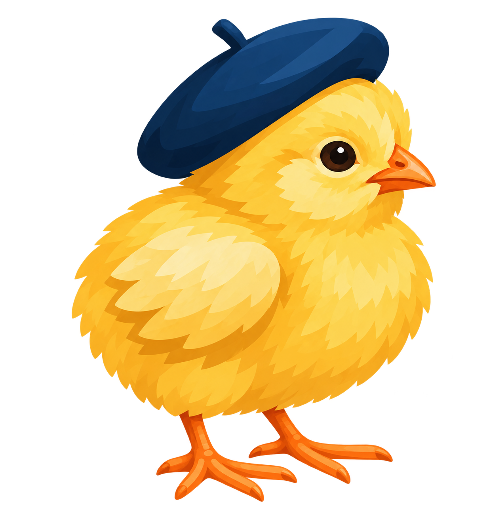
Partie II
Faux débutant
A1 – A2
Vous connaissez déjà quelques mots et quelques phrases toutes faites. Il s'agit maintenant de
comprendre la mécanique : conjuguer au présent, au passé, accorder les adjectifs et poser de vraies
questions.
Chapitre 10
Les verbes en -ER au présent
Le premier groupe — près de 90 % des verbes français, et un seul modèle à retenir.
Les pronoms sujets
jeI
nouswe
tuyou (informal)
vousyou (formal or plural)
il / elle / onhe / she / one, we
ils / ellesthey
On, le « nous » de tous les joursOn se conjugue comme il, mais dans la langue parlée il remplace presque toujours
nous : on dit on mange bien plus souvent que nous mangeons.
Apprenez donc on avec les formes du singulier, et utilisez-le pour parler de vous et d'autrui.
Vingt-deux verbes à connaître
acheterto buy
habiterto live
aiderto help
jouerto play
aimerto like / to love
mangerto eat
appelerto call
montrerto show
arrêterto stop
oublierto forget
chercherto look for
parlerto speak
commanderto order
payerto pay
commencerto start
penserto think
demanderto ask
regarderto look
donnerto give
trouverto find
écouterto listen
étudierto study
Le modèle : parler
Parler to speak
je
parle
tu
parles
il / elle / on
parle
nous
parlons
vous
parlez
ils / elles
parlent
La très grande majorité des verbes en -ER suivent ce modèle. Retirez simplement
-er de l'infinitif pour obtenir le radical
(parler → parl-), puis ajoutez les terminaisons.
Quatre formes sur six se prononcent pareil
Les terminaisons -e, -es et -ent sont
muettes. je parle, tu parles, il parle et
ils parlent se prononcent tous /paʁl/. Seules
-ons et -ez s'entendent.
— Est-ce que vous parlez français ?Do you speak French?
— Oui, je parle français, anglais et espagnol.Yes, I speak French, English and Spanish.
Les cas particuliers
Quatre verbes du tableau ci-dessus modifient légèrement leur radical. Dans tous les cas,
c'est la prononciation qui commande l'orthographe, et non l'inverse.
Commencer to start
je
commence
tu
commences
il / elle / on
commence
nous
commençons
vous
commencez
ils / elles
commencent
Manger to eat
je
mange
tu
manges
il / elle / on
mange
nous
mangeons
vous
mangez
ils / elles
mangent
Pourquoi la cédille et le -e-
Le groupe -ce- se lit /s/, mais -co- se lirait
/k/ : on ajoute une cédille pour garder le son
/s/ dans nous commençons. De même, -ge- se lit
/ʒ/ mais -go- se lirait /ɡ/ : on ajoute un
-e- après le g dans nous mangeons.
Appeler to call
j'
appelle
tu
appelles
il / elle / on
appelle
nous
appelons
vous
appelez
ils / elles
appellent
Acheter to buy
j'
achète
tu
achètes
il / elle / on
achète
nous
achetons
vous
achetez
ils / elles
achètent
La même logique, deux orthographes
Quand la terminaison est muette, la voyelle du radical est accentuée et tendue :
/ɛ/ — le e de l'anglais bed. On l'écrit soit en doublant la
consonne (j'appelle), soit avec un accent grave (j'achète).
Quand la terminaison est prononcée — nous et vous — la voyelle
redevient neutre /ə/ et l'orthographe se simplifie :
nous appelons, nous achetons. (Approximations : le son exact varie
selon l'accent.)
Une astuce visuelle
Regardez la forme des six lignes : les quatre du haut et du bas sont modifiées, les deux du milieu
(nous, vous) restent régulières. Ce dessin en « bottes » — les quatre coins accentués,
le centre plat — revient dans toute la conjugaison française.
Exercice 10.1 — Conjuguez au présent
Je (regarder) la télévision.
Nous (manger) à midi.
Tu (habiter) à Paris ?
Nous (commencer) le cours.
Elle (acheter) du pain.
Vous (parler) très bien.
Ils (écouter) de la musique.
J' (appeler) mon frère.
Exercice 10.2 — Muet ou prononcé ?
Indiquez si la terminaison s'entend à l'oral.
je trouve
nous trouvons
ils trouvent
vous trouvez
Chapitre 11
Les verbes irréguliers au présent
Vingt-quatre verbes qui ne suivent aucun modèle — et qui sont les plus fréquents de la langue.
Les plus irréguliers sont les plus utiles
Ce n'est pas un hasard : ce sont les verbes les plus employés qui résistent le mieux à la
régularisation. Être et avoir sont à apprendre en premier — ils
servent aussi d'auxiliaires pour former le passé composé (chapitre 12).
Les deux auxiliaires
Être to be
je
suis
tu
es
il / elle
est
nous
sommes
vous
êtes
ils / elles
sont
Avoir to have
j'
ai
tu
as
il / elle
a
nous
avons
vous
avez
ils / elles
ont
Les verbes du quotidien
Aller to go
je
vais
tu
vas
il / elle
va
nous
allons
vous
allez
ils / elles
vont
Faire to do / make
je
fais
tu
fais
il / elle
fait
nous
faisons
vous
faites
ils / elles
font
Prendre to take
je
prends
tu
prends
il / elle
prend
nous
prenons
vous
prenez
ils / elles
prennent
Trois formes en -tes à retenirvous êtes, vous faites, vous dites sont les seules
formes de vous qui ne se terminent pas en -ez. Toutes les autres, sans exception,
prennent -ez. Attention aussi à nous faisons, qui se prononce
/fə.zɔ̃/ et non /fɛ.zɔ̃/.
Les verbes modaux
Pouvoir can
je
peux
tu
peux
il / elle
peut
nous
pouvons
vous
pouvez
ils / elles
peuvent
Vouloir to want
je
veux
tu
veux
il / elle
veut
nous
voulons
vous
voulez
ils / elles
veulent
Devoir must
je
dois
tu
dois
il / elle
doit
nous
devons
vous
devez
ils / elles
doivent
Savoir to know
je
sais
tu
sais
il / elle
sait
nous
savons
vous
savez
ils / elles
savent
Connaître to know
je
connais
tu
connais
il / elle
connaît
nous
connaissons
vous
connaissez
ils / elles
connaissent
Falloir impersonnel
il
faut
Ce verbe n'existe qu'à la forme il : il faut partir.
Savoir ou connaître ?Savoir porte sur une information ou une compétence : je sais nager,
je sais où il habite. Connaître porte sur une personne ou un lieu dont on a
l'expérience : je connais Marie, je connais Paris. Connaître n'est jamais
suivi d'un verbe.
Venir, tenir et les verbes en -ir
Venir to come
je
viens
tu
viens
il / elle
vient
nous
venons
vous
venez
ils / elles
viennent
Tenir to hold
je
tiens
tu
tiens
il / elle
tient
nous
tenons
vous
tenez
ils / elles
tiennent
Partir to leave
je
pars
tu
pars
il / elle
part
nous
partons
vous
partez
ils / elles
partent
Courir to run
je
cours
tu
cours
il / elle
court
nous
courons
vous
courez
ils / elles
courent
Ouvrir to open
j'
ouvre
tu
ouvres
il / elle
ouvre
nous
ouvrons
vous
ouvrez
ils / elles
ouvrent
Recevoir to receive
je
reçois
tu
reçois
il / elle
reçoit
nous
recevons
vous
recevez
ils / elles
reçoivent
Ouvrir se conjugue comme un verbe en -ER
Malgré son infinitif en -ir, ouvrir prend les terminaisons du premier groupe :
j'ouvre, tu ouvres. Il en va de même pour
offrir, couvrir et souffrir.
Dire, lire, écrire, boire, voir, croire, mettre
Dire to say
je
dis
tu
dis
il / elle
dit
nous
disons
vous
dites
ils / elles
disent
Lire to read
je
lis
tu
lis
il / elle
lit
nous
lisons
vous
lisez
ils / elles
lisent
Écrire to write
j'
écris
tu
écris
il / elle
écrit
nous
écrivons
vous
écrivez
ils / elles
écrivent
Boire to drink
je
bois
tu
bois
il / elle
boit
nous
buvons
vous
buvez
ils / elles
boivent
Voir to see
je
vois
tu
vois
il / elle
voit
nous
voyons
vous
voyez
ils / elles
voient
Croire to believe
je
crois
tu
crois
il / elle
croit
nous
croyons
vous
croyez
ils / elles
croient
Mettre to put
je
mets
tu
mets
il / elle
met
nous
mettons
vous
mettez
ils / elles
mettent
Se conjuguent sur les mêmes modèles :
vivre, sortir, sentir, dormir, servir, suivre, mentir.
Exercice 11.1 — Conjuguez au présent
Nous (être) en retard.
Vous (faire) la cuisine ?
Ils (avoir) deux enfants.
Je (prendre) le train à 8 h.
Tu (pouvoir) m'aider ?
Elle (venir) de Lyon.
Nous (boire) du café.
Vous (dire) la vérité.
Exercice 11.2 — Savoir ou connaître ?
Je parler trois langues.
Tu ce restaurant ?
Nous bien Marseille.
Elle que le train est en retard.
Chapitre 12
Imparfait et passé composé
Les deux temps du passé, et la table de référence des vingt-huit verbes essentiels.
L'imparfait : une seule règle
L'imparfait est le temps le plus régulier du français. Il se forme toujours de la même façon, pour
tous les verbes sauf un.
La recette
Prenez la forme nous du présent, retirez la terminaison -ons, ajoutez
les terminaisons de l'imparfait.
nous faisons → radical fais- →
je faisais, tu faisais, il faisait, nous faisions, vous faisiez, ils faisaient.
Pronom
Terminaison
je
-ais
tu
-ais
il / elle
-ait
nous
-ions
vous
-iez
ils / elles
-aient
La seule exception : êtreÊtre ne suit pas la règle (on ne dit pas « nous sommes » → « somm- »). Son radical
d'imparfait est ét- : j'étais, tu étais, il était, nous étions, vous étiez,
ils étaient.
Quatre formes qui se prononcent pareil
Comme au présent, -ais, -ait et -aient se prononcent tous
/ɛ/. Seules les formes nous et vous se distinguent à l'oreille.
Le passé composé : deux morceaux
Le passé composé se construit avec un auxiliaire conjugué au présent, suivi du
participe passé du verbe.
Auxiliaire
Exemple
avoir la grande majorité des verbes
j'ai parlé · tu as pris · nous avons fait I spoke · you took · we did
être verbes de mouvement et d'état
je suis allé · elle est partie · nous sommes venus I went · she left · we came
Avec être, le participe s'accorde
Quand l'auxiliaire est être, le participe passé s'accorde avec le sujet, comme un
adjectif : il est allé, elle est allée,
ils sont allés, elles sont allées.
Avec avoir, il n'y a pas d'accord avec le sujet : elle a mangé, sans -e.
Table de référence — 28 verbes
Pour chaque verbe : la traduction, l'auxiliaire du passé composé et le participe passé.
Infinitif
Anglais
Auxiliaire
Participe passé
être
to be
avoir
été
avoir
to have
avoir
eu
aller
to go
être
allé
faire
to make / to do
avoir
fait
vouloir
to want
avoir
voulu
pouvoir
to be able to / can
avoir
pu
devoir
to have to / must
avoir
dû
savoir
to know (things)
avoir
su
venir
to come
être
venu
tenir
to hold
avoir
tenu
lire
to read
avoir
lu
dire
to say
avoir
dit
recevoir
to receive
avoir
reçu
voir
to see
avoir
vu
croire
to believe
avoir
cru
boire
to drink
avoir
bu
écrire
to write
avoir
écrit
dormir
to sleep
avoir
dormi
partir
to leave
être
parti
sortir
to go out
être
sorti
mettre
to put
avoir
mis
prendre
to take
avoir
pris
ouvrir
to open
avoir
ouvert
offrir
to offer
avoir
offert
appeler
to call
avoir
appelé
connaître
to know (places, people)
avoir
connu
conduire
to drive
avoir
conduit
produire
to produce
avoir
produit
Des familles de participes
Les participes ne sont pas si nombreux à mémoriser si on les groupe :
en -u (eu, voulu, pu, su, tenu, venu, lu, reçu, vu, cru, bu, connu),
en -is (mis, pris),
en -it (dit, écrit, conduit, produit),
en -ert (ouvert, offert).
Restent été, fait, dû et les participes réguliers en -é
de tous les verbes du premier groupe.
Imparfait ou passé composé ?
Imparfait — le décor
Passé composé — l'événement
Une situation, une habitude, une description qui dure.
Une action ponctuelle, terminée, qui fait avancer le récit.
Il pleuvait.
Le téléphone a sonné.
Quand j'étais petit, j'habitais à Nice.
Hier, j'ai visité le musée.
Tous les lundis, elle allait au marché.
Lundi, elle est allée au marché.
Une image utile
L'imparfait, c'est le décor du film : ce qui était déjà là, en cours, sans début ni fin
précis. Le passé composé, c'est ce qui arrive : les événements qu'on pourrait numéroter.
Dans un même récit, les deux alternent constamment.
Exercice 12.1 — Mettez à l'imparfait
nous faisons → je
nous prenons → tu
nous buvons → il
nous finissons → nous
nous sommes → elles
Exercice 12.2 — Mettez au passé composé
Je (prendre) le bus. →
Elle (aller) à Paris. →
Nous (voir) un film. →
Ils (partir) tôt. →
Tu (écrire) une lettre. →
Vous (boire) du thé. →
Exercice 12.3 — Imparfait ou passé composé ?
Quand j' (être) enfant, je (jouer) au football tous les jours.
Hier, il (pleuvoir) toute la journée, alors nous (rester) à la maison.
Elle (lire) tranquillement quand le téléphone (sonner).
Chapitre 13
Les adjectifs essentiels
Décrire une personne, un objet, une situation — avec l'accord et la place, qui n'obéissent pas à l'anglais.
L'accord des adjectifs
En français, l'adjectif s'accorde avec le nom qu'il décrit : il change de forme au féminin et au pluriel.
Règle
Masculin
Féminin
Cas général : on ajoute -e
grand
grande
Déjà terminé par -e : aucun changement
calme
calme
-eux → -euse
heureux
heureuse
-f → -ve
neuf
neuve
-er → -ère
cher
chère
Consonne doublée + -e
bon, gentil
bonne, gentille
Irréguliers à mémoriser
beau, nouveau, vieux
belle, nouvelle, vieille
Au pluriel, on ajoute -s : des livres intéressants, des maisons propres.
Les adjectifs en -eux ne changent pas au masculin pluriel : des étudiants sérieux.
Mon frère est grand et ma sœur est grande.My brother is tall and my sister is tall.
Elle est très heureuse aujourd'hui.She is very happy today.
Ce sont des voisins gentils.They are kind neighbours.
Neuf ou nouveau ?
Les deux se traduisent par new, mais neuf veut dire « jamais utilisé, qui sort
de l'usine » : une voiture neuve. Nouveau veut dire « nouveau pour moi » :
ma nouvelle voiture, achetée d'occasion la semaine dernière.
La place de l'adjectif
Contrairement à l'anglais, l'adjectif français se place normalement après le nom :
une voiture rapide, un film intéressant.
Les exceptions : avant le nom
Un petit groupe d'adjectifs très courants se place avant le nom. Ils concernent la
beauté, l'âge, la qualité et la taille.
Catégorie
Adjectifs
Exemple
Beauté
beau, joli
un beau jardin
Âge
jeune, vieux, nouveau
une vieille maison
Qualité
bon, mauvais
un bon café
Taille
grand, petit, long, court
un petit problème
Astuce de mémorisation
Retenez les quatre catégories : Beauté, Âge,
Qualité, Taille. Tous les autres adjectifs de ce chapitre se placent
après le nom.
Les 50 adjectifs
La forme féminine apparaît quand elle diffère. La prononciation est donnée en alphabet phonétique
international.
Français
Prononciation
Anglais
beau / belle
/bo/ · /bɛl/
beautiful
bon / bonne
/bɔ̃/ · /bɔn/
good
calme
/kalm/
calm
cher / chère
/ʃɛʁ/
expensive
clair / claire
/klɛʁ/
clear, light
content / contente
/kɔ̃tɑ̃/ · /kɔ̃tɑ̃t/
happy, pleased
court / courte
/kuʁ/ · /kuʁt/
short
désolé / désolée
/dezɔle/
sorry
difficile
/difisil/
difficult
drôle
/dʁol/
funny
égoïste
/eɡɔist/
selfish
facile
/fasil/
easy
faible
/fɛbl/
weak
fier / fière
/fjɛʁ/
proud
fort / forte
/fɔʁ/ · /fɔʁt/
strong
froid / froide
/fʁwa/ · /fʁwad/
cold
génial / géniale
/ʒenjal/
great, awesome
gentil / gentille
/ʒɑ̃ti/ · /ʒɑ̃tij/
kind
grand / grande
/ɡʁɑ̃/ · /ɡʁɑ̃d/
tall, big
heureux / heureuse
/øʁø/ · /øʁøz/
happy
important / importante
/ɛ̃pɔʁtɑ̃/ · /ɛ̃pɔʁtɑ̃t/
important
inquiet / inquiète
/ɛ̃kjɛ/ · /ɛ̃kjɛt/
worried
intelligent / intelligente
/ɛ̃teliʒɑ̃/ · /ɛ̃teliʒɑ̃t/
smart
intéressant / intéressante
/ɛ̃teʁesɑ̃/ · /ɛ̃teʁesɑ̃t/
interesting
jeune
/ʒœn/
young
joli / jolie
/ʒɔli/
pretty
lent / lente
/lɑ̃/ · /lɑ̃t/
slow
libre
/libʁ/
free, available
long / longue
/lɔ̃/ · /lɔ̃ɡ/
long
malade
/malad/
sick
mauvais / mauvaise
/movɛ/ · /movɛz/
bad
méchant / méchante
/meʃɑ̃/ · /meʃɑ̃t/
mean
neuf / neuve
/nœf/ · /nœv/
brand new
normal / normale
/nɔʁmal/
normal
nouveau / nouvelle
/nuvo/ · /nuvɛl/
new
occupé / occupée
/ɔkype/
busy
ouvert / ouverte
/uvɛʁ/ · /uvɛʁt/
open
parfait / parfaite
/paʁfɛ/ · /paʁfɛt/
perfect
pauvre
/povʁ/
poor
petit / petite
/pəti/ · /pətit/
small
possible
/pɔsibl/
possible
prêt / prête
/pʁɛ/ · /pʁɛt/
ready
propre
/pʁɔpʁ/
clean
rapide
/ʁapid/
fast
riche
/ʁiʃ/
rich
sale
/sal/
dirty
sérieux / sérieuse
/seʁjø/ · /seʁjøz/
serious
simple
/sɛ̃pl/
simple
triste
/tʁist/
sad
vieux / vieille
/vjø/ · /vjɛj/
old
Exercice 13.1 — Écrivez le féminin
heureux →
gentil →
cher →
neuf →
beau →
long →
calme →
vieux →
Exercice 13.2 — Avant ou après le nom ?
Placez l'adjectif au bon endroit et accordez-le.
une maison (vieux) →
un film (intéressant) →
un jardin (beau) →
une voiture (rapide) →
un problème (petit) →
des chaussures (propre) →
Chapitre 14
Les mots interrogatifs
Neuf mots pour poser une question — et trois façons de dire « what ».
Le vocabulaire
Français
Prononciation
Anglais
Combien
/kɔ̃.bjɛ̃/
How much / How many
Comment
/kɔ.mɑ̃/
How
Pourquoi
/puʁ.kwa/
Why
Qui
/ki/
Who
Quand
/kɑ̃/
When
Où
/u/
Where
Que / Qu'est-ce que / Quoi (what + verbe)
/kə/ · /kɛs.kə/ · /kwa/
What
Quel(s) / Quelle(s) (which / what + nom)
/kɛl/
Which / What
Est-ce que (transforme une affirmation en question)
/ɛs.kə/
(question marker — no direct translation)
Que, qu'est-ce que, quoi
Ces trois formes signifient toutes what. Elles ne diffèrent pas par le sens, mais par le
registre — le niveau de formalité.
Forme
Registre
Exemples
Que
Soutenu, avec inversion
Que fais-tu ? · Que manges-tu ?
Qu'est-ce que
Standard, courant
Qu'est-ce que tu fais ? · Qu'est-ce que tu manges ?
Quoi
Familier, oral
Tu fais quoi ? · Tu manges quoi ?
Quoi se place toujours à la fin
On ne dit jamais « Quoi tu fais ? » — seulement Tu fais quoi ? C'est la
différence de construction la plus visible entre les trois formes.
Est-ce que
Est-ce que ne se traduit pas par un mot anglais : c'est un marqueur de
question qu'on place devant une affirmation pour la transformer en question, sans avoir à
inverser le sujet et le verbe.
Tu parles français.→ Est-ce que tu parles français ?
Où est-ce que tu habites ?Where do you live?
Quand est-ce que tu arrives ?When are you arriving?
D'où vient « qu'est-ce que »
C'est littéralement que + est-ce que, soudés en une seule expression. Une fois qu'on
voit la construction, elle cesse d'être opaque.
Est-ce que est facultatif
On peut aussi se contenter de monter l'intonation à la fin d'une affirmation :
« Tu parles français ? » Mais est-ce que est très employé, à l'oral comme à
l'écrit, précisément parce qu'il évite l'inversion.
Quel, quelle, quels, quelles
Contrairement à que et quoi, ces formes ne changent pas selon le registre : elles
s'accordent en genre et en nombre avec le nom qui suit.
Forme
Accord
Exemple
Quel
masculin singulier
Quel jour sommes-nous ?
Quelle
féminin singulier
Quelle heure est-il ?
Quels
masculin pluriel
Quels sports pratiques-tu ?
Quelles
féminin pluriel
Quelles langues parles-tu ?
Même prononciation pour les quatrequel, quelle, quels et quelles se
prononcent tous /kɛl/. Seule l'orthographe change, selon le genre et le nombre
du nom.
L'ordre des mots est souple
On peut aussi placer le mot interrogatif à la fin : « Nous sommes quel jour ? » ou
« Il est quelle heure ? » au lieu de la forme inversée. Les deux sont correctes et
couramment employées.
Exercice 14.1 — Quel mot interrogatif ?
tu habites ? — À Lyon.
ça coûte ? — Dix euros.
est-ce que le train part ? — À 14 h.
tu pleures ? — Parce que je suis triste.
allez-vous ? — Très bien, merci.
est cette femme ? — C'est ma sœur.
Exercice 14.2 — Quel, quelle, quels ou quelles ?
heure est-il ?
jour sommes-nous ?
langues parlez-vous ?
sports pratiques-tu ?
est votre nom ?
sont vos couleurs préférées ?
Exercice 14.3 — Trois registres
Écrivez la même question dans les trois registres.
Soutenu : · Standard : · Familier : (what are you doing?)
Soutenu : · Standard : · Familier : (what are you eating?)
Chapitre 15
Qui ou que ?
Le pronom relatif : une seule question à se poser, et vingt phrases pour l'ancrer.
La règle
Un pronom relatif relie deux propositions : le livre + il est sur la table →
le livre qui est sur la table. Le choix entre qui et
que dépend d'une seule chose : ce qui suit immédiatement le pronom.
Pronom
Ce qui suit
Exemple
qui
un verbe le pronom est sujet
le livre quiest sur la table
que
un sujet le pronom est complément
le livre queje lis
Le test en une seconde
Regardez le mot qui suit le blanc. Si c'est un verbe → qui.
Si c'est un sujet (je, tu, il, nous, un nom propre, un groupe nominal) →
que. Vous n'avez pas besoin d'analyser le sens de la phrase.
Que s'élide, qui ne s'élide jamais
Devant une voyelle, que devient qu' : le pays
qu'elle adore, ce qu'il a dit. En revanche
qui ne change jamais : on écrit l'homme qui arrive, et
jamais « qu'arrive ».
Attention aux faux sujets
Dans « un chat qui nous observe », le mot nous suit le pronom — mais
ce n'est pas un sujet : c'est un complément (le chat observe nous). Le vrai verbe est
observe, donc on écrit qui. Vérifiez toujours qui fait l'action.
Ce qui, ce que
Quand il n'y a pas de nom auquel se rattacher, on ajoute ce devant le pronom. La règle
de choix reste exactement la même.
Je ne sais pas ce qui se passe.« se passe » est un verbe → ce qui
Fais ce que tu veux.« tu » est un sujet → ce que
Exercice 15.1 — Qui ou que ?
Quel est le type de fromage vous préférez ?
Je voudrais acheter la voiture coûte le moins cher.
Est-ce que tu aimes la chanson passe à la radio ?
Le film je préfère s'appelle Le Grand Bleu.
Pouvez-vous me donner le livre est sur la table ?
Le cadeau j'ai reçu pour mon anniversaire est dans ma chambre.
Le magasin a fermé employait des dizaines de salariés.
Qui est la personne m'a envoyé un message ?
Voici le restaurant nous vous recommandons.
Il y a un chat nous observe de l'autre côté de la rue.
Exercice 15.2 — Qui, que ou qu' ?
Attention à l'élision : « que » devient « qu' » devant une voyelle.
Le Maroc est un pays elle adore.
Fais ce tu veux, ce n'est pas mon problème.
C'est une politique a créé de fortes divisions.
Je suis d'accord avec ce il a dit.
L'homme arrive est probablement notre hôte.
Je ne sais pas ce se passe ici.
Dans la vie, je fais toujours ce me plaît !
Le rouge est la couleur vous va le mieux !
C'est la robe Aurélie a choisie pour son mariage.
Monsieur Fournier est le professeur nous enseigne le français.
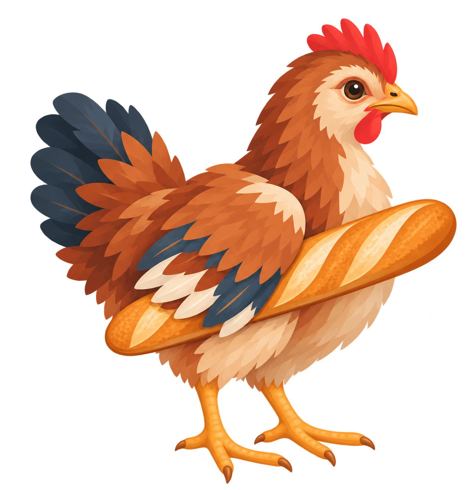
Annexe
Corrigés
Tous les exercices
Corrigez-vous une fois l'exercice terminé, jamais pendant. Si une réponse vous surprend,
relisez l'encadré correspondant dans le chapitre plutôt que de mémoriser la correction seule.
Annexe
Corrigés des exercices
Chapitre 1 — Salutations et politesse
1.1 — Complétez
Bonjour
Bonsoir
De rien
Enchanté
Bonne journée
Pardon (ou : Excusez-moi)
1.2 — Tu ou vous ?
vous
tu
vous
tu — on tutoie toujours un jeune enfant
tu — entre voyageurs du même âge, le tutoiement s'impose vite ; « vous » n'est pas faux
Chapitre 2 — Les nombres
2.1 — En chiffres
48
75
93
71
97
280
2.2 — En toutes lettres
seize
vingt et un
soixante-deux
soixante-dix-huit
quatre-vingt-quatre
quatre-vingt-dix-neuf
Chapitre 3 — Les couleurs
3.1 — Mettez au féminin
verte
blanche
bleue
grise
violette
rouge — invariable
Chapitre 4 — Les jours et l'heure
4.1 — Une fois ou chaque semaine ?
chaque semaine (le mardi)
une seule fois
chaque semaine (le dimanche)
une seule fois
4.2 — Dites l'heure
dix heures et quart
six heures et demie
deux heures moins le quart
midi
minuit et demi — sans « e »
dix heures moins dix
Chapitre 5 — Les saisons et les mois
5.1 — En ou au ?
en été
au printemps
en automne
en hiver
5.2 — Quelle saison ?
l'hiver
le printemps
l'été
l'automne
Chapitre 6 — La météo
6.1 — Il fait, il, ou il y a ?
Il fait beau
Il pleut
Il y a du brouillard
Il neige
Il fait très froid
Il y a des nuages
6.2 — Trouvez le contraire
Il fait mauvais.
Il fait froid.
Il fait frais.
Il fait humide.
Chapitre 7 — Les animaux
7.1 — Les pièges
le hibou— h aspiré : pas d'élision, on ne dit jamais « l'hibou ».
une souris— mot féminin, malgré sa terminaison en -is.
des chevaux— les mots en -al font leur pluriel en -aux.
des hiboux— sept mots en -ou prennent un -x : bijou, caillou, chou, genou, hibou, joujou, pou.
le dromadaire— une bosse ; le chameau en a deux.
en papillon— c'est la métamorphose.
l'abeille— la guêpe ne fait pas de miel.
la pieuvre— aussi appelée poulpe, elle a huit bras.
la biche— femelle du cerf ; leur petit est le faon.
le renard— « rusé comme un renard ».
l'âne— « têtu comme un âne », ou « comme une mule ».
Il pleut des cordes— ou « il pleut à verse ». L'anglais dit « cats and dogs », pas le français.
7.2 — Le petit de l'animal
le veau
l'agneau
le poussin
le poulain
le chiot
le louveteau
Chapitre 8 — Phrases essentielles
8.1 — Que dites-vous ?
Je ne comprends pas. (ou : Est-ce que vous pouvez répéter ?)
Est-ce que vous pouvez parler plus lentement ?
Combien ça coûte ?
J'ai une réservation au nom de…
Où sont les toilettes ?
Chapitre 9 — Phrases utiles pour touristes
9.1 — Question ou réponse ?
e — Non, c'est à cinq minutes à pied.
a — Aller simple ou aller-retour ?
b — Non, seulement en espèces.
c — Au fond, à droite.
d — De 7h à 10h.
Chapitre 10 — Les verbes en -ER
10.1 — Conjuguez au présent
regarde
mangeons — le -e- garde le son /ʒ/
habites
commençons — la cédille garde le son /s/
achète — terminaison muette → accent grave
parlez
écoutent
appelle — terminaison muette → double l
10.2 — Muet ou prononcé ?
muet
prononcé
muet
prononcé
Chapitre 11 — Les verbes irréguliers
11.1 — Conjuguez au présent
sommes
faites
ont
prends
peux
vient
buvons
dites
11.2 — Savoir ou connaître ?
sais — une compétence, suivie d'un verbe
connais — un lieu dont on a l'expérience
connaissons
sait — une information
Chapitre 12 — Imparfait et passé composé
12.1 — À l'imparfait
je faisais
tu prenais
il buvait
nous finissions
elles étaient — seule exception : radical ét-
12.2 — Au passé composé
J'ai pris le bus.
Elle est allée à Paris. — être → accord au féminin
Nous avons vu un film.
Ils sont partis tôt. — être → accord au pluriel
Tu as écrit une lettre.
Vous avez bu du thé.
12.3 — Imparfait ou passé composé ?
j'étais · je jouais — une situation et une habitude
il a plu · nous sommes restés — deux événements datés
elle lisait · a sonné — le décor, puis l'événement qui l'interrompt
Chapitre 13 — Les adjectifs
13.1 — Écrivez le féminin
heureuse
gentille
chère
neuve
belle
longue
calme — déjà en -e
vieille
13.2 — Avant ou après le nom ?
une vieille maison — âge
un film intéressant
un beau jardin — beauté
une voiture rapide
un petit problème — taille
des chaussures propres
Chapitre 14 — Les mots interrogatifs
14.1 — Quel mot interrogatif ?
Où
Combien
Quand
Pourquoi
Comment
Qui
14.2 — Quel, quelle, quels ou quelles ?
Quelle (heure, féminin)
Quel (jour, masculin)
Quelles (langues, féminin pluriel)
Quels (sports, masculin pluriel)
Quel (nom, masculin)
Quelles (couleurs, féminin pluriel)
14.3 — Trois registres
Que fais-tu ? · Qu'est-ce que tu fais ? · Tu fais quoi ?
Que manges-tu ? · Qu'est-ce que tu manges ? · Tu manges quoi ?
Chapitre 15 — Qui ou que ?
15.1 — Qui ou que ?
que— « vous » est un sujet.
qui— « coûte » est un verbe.
qui— « passe » est un verbe.
que— « je » est un sujet.
qui— « est » est un verbe.
que— « j' » est un sujet : « que j'ai reçu ».
qui— « a fermé » est un verbe.
qui— « a envoyé » est un verbe.
que— « nous » est un sujet.
qui— ici « nous » est complément, pas sujet : le chat nous observe.
15.2 — Qui, que ou qu' ?
qu'— « elle » est un sujet ; élision devant la voyelle.
que— « tu » est un sujet ; pas d'élision devant une consonne.
qui— « a créé » est un verbe.
qu'— « il » est un sujet, élidé en qu'.
qui— « arrive » est un verbe. Qui ne s'élide jamais.
qui— « se passe » est un verbe : ce qui.
qui— « plaît » est un verbe : ce qui. Ici « me » est complément.
qui— ici « vous » est complément : la couleur vous va.
qu'— « Aurélie » est un sujet ; élision même devant un nom propre.
qui— « enseigne » est un verbe. Ici « nous » est complément.
Continuez en ligne
Tous les chapitres de ce manuel existent en version interactive et auto-corrigée sur le site :
quiz, cartes de révision, exercices d'écoute et de conjugaison notés.
Les ressources sont gratuites, et de nouveaux chapitres — niveaux intermédiaire et avancé —
sont en préparation.